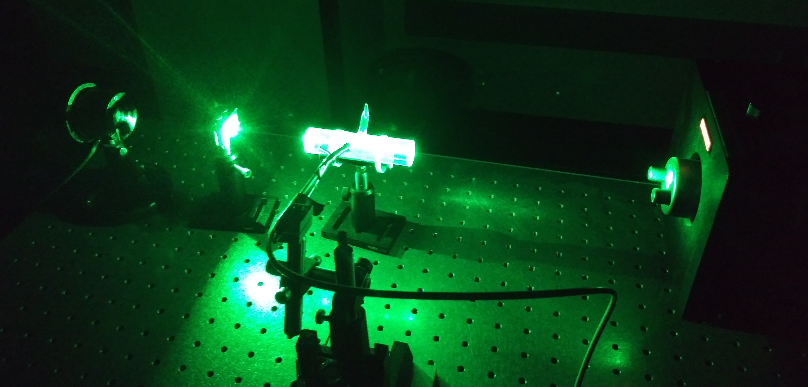

Laser-induced fluorescence spectroscopy of diatomic iodine excited using an argon-ion laser. I performed this experiment in undergrad on October 13, 2020 when I took Modern Experimental Physics taught by Prof. Seyffie Maleki.
I am a postdoctoral research associate in the Chemical Physics and Analysis
group at
Pacific Northwest National Laboratory.
My work explores nuclear quantum effects through simulations of multidimensional
ultrafast nonlinear laser spectroscopy and X-ray spectroscopy.
I received my PhD in theoretical and computational chemistry from
Johns Hopkins University, where I used high-accuracy quantum chemical
calculations and machine learning to model and simulate photochemical processes.
I studied laser cooling, molecular conical intersections,
and nonadiabatic chemical dynamics.
I serve on the
Executive Committee
of the Maryland Local Section of the American Chemical Society
and am responsible for managing and updating the
Local Section website. I also served as a Safety Captain on the Johns Hopkins
University
Chemistry Student Safety Committee.
I graduated as
valedictorian
from Union College in Schenectady, NY with a double major in
physics and chemistry. I synthesized and characterized
metal-infused aerogels in the
Union College Aerogel Lab, where I completed my Honors senior thesis. Check out the
research tab to learn about other
projects I’ve worked on.
Postdoctoral Research Associate
Pacific Northwest National Laboratory
Integrated Discovery Sciences Directorate
Physical Sciences Division
Chemical Physics and Analysis group
Richland, WA